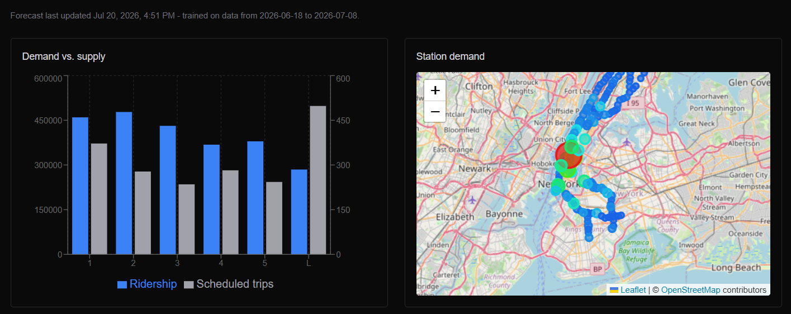

New York City MTA Subway Forecasting Dashboard
Built a self-directed transit data product that forecasts route demand, scheduled capacity, service reliability, and station crowding risk using only openly published MTA and NYC data.
Read the MTA forecasting case study
Context & opportunity
The project explores what can be built for riders and planners using public transit data alone: no proprietary agency access and no paid data feeds.
Forecasting focus
The dashboard models baseline demand and scheduled capacity by route and day of week, the effect of delays and service incidents on realized reliability, and station-level crowding risk with a nearby-event scenario overlay.
Data foundation
Inputs are sourced, verified, and documented from open MTA and NYC publications, including hourly station ridership, GTFS schedules, and monthly major-incident records.
Architecture
A scheduled Python pipeline computes recurring forecasts and writes them to Postgres/PostGIS. A Next.js dashboard renders parameter-driven charts and an interactive map.
Engineering tradeoff
The product uses a precomputed forecast grid rather than live model inference in the request path, keeping the dashboard responsive and the infrastructure within free-tier constraints. The limitation is disclosed directly in the product.
Stack
Next.js, React, Supabase (Postgres + PostGIS), Python (pandas and statsmodels), React-Leaflet, GitHub Actions, and Vercel.